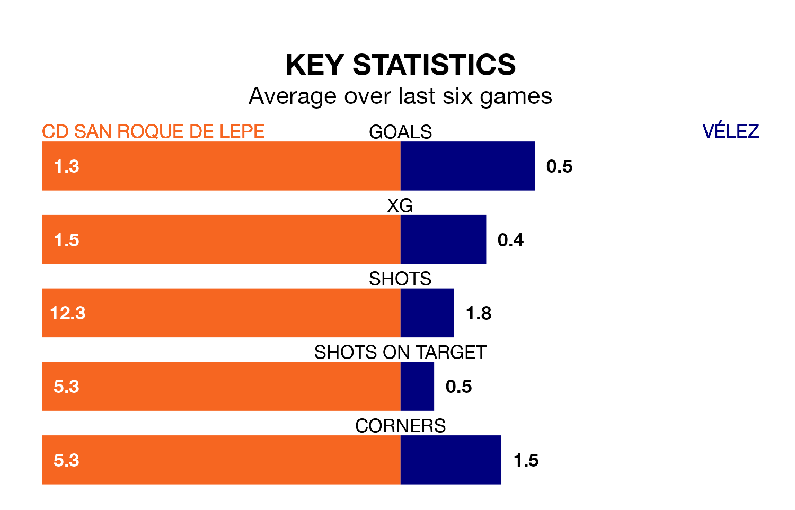

Sunday's early match at the Estadio Municipal Ciudad de Lepe sees two relegation candidates play each other, as 15th-ranked CD San Roque de Lepe host 16th-placed Vélez.
San Roque de Lepe have picked up 34 points from their first 34 Segunda División RFEF Group 4 games, with nine wins and seven draws.
That is two points more than Vélez have collected, having won seven and drawn 11.
San Roque de Lepe are in mixed form in the Segunda División RFEF Group 4, with two wins and a draw from their last six games.
With no wins and a draw over that period, Vélez's form is much worse – they have taken one point from 18, compared to the home team's seven.
With 29 goals in 30 games so far this season, the visitors are scoring at the league's average rate with 1.0 goals per game. And they are conceding more than average, letting in 44 goals at a rate of 1.5 per game.
San Roque de Lepe, meanwhile, are above average scorers, with 1.1 goals per game. They have also conceded 1.1 goals per game.
In the last five years, San Roque de Lepe and Vélez have played each other on five occasions. San Roque de Lepe won three of them and Vélez two.
On average, San Roque de Lepe scored 1.8 goals and Vélez 0.8 in those matches.
Their last meeting was on December 3, when Vélez won 2-1 at home.
San Roque de Lepe's last match was on April 7, a 2-1 loss against Sevilla B, with Kevin Bautista Ramírez getting the goal for San Roque de Lepe.
Vélez lost 1-0 against Racing Cartagena MM last time out, also on April 7.
Updated: 10:01 (UTC), 12/04/24